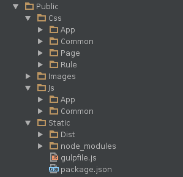

BY 唐琪
npm install package-name // 安装包到当前目录
npm install package-name -g // 安装包到
npm install package-name --save // 安装包并把写入package.json的dependencies
npm install package-name --save-dev // 安装包并把写入package.json的devDependencies
npm install // 根据package.json中的dependencies参数，安装所需要的包
npm install --dev // 根据package.json中的devDependencies参数，安装所需要的包
{
"name": "gulp_auto_build_demo",
"version": "1.0.0",
"description": "one gulp auto build demo",
"main": "index.js",
"scripts": {},
"repository": {
"type": "git",
"url": "git+https://github.com/itbeihe/gulp_auto_build_demo.git"
},
"author": "",
"license": "ISC",
"bugs": {
"url": "https://github.com/itbeihe/gulp_auto_build_demo/issues"
},
"homepage": "https://github.com/itbeihe/gulp_auto_build_demo#readme",
"dependencies":{
},
"devDependencies": {
"gulp-concat": "^2.6.0",
"gulp-css-rework-url": "git://github.com/itbeihe/gulp-css-rework-url.git#demo",
"gulp-cssmin": "^0.1.7",
"gulp-csso": "^1.0.0",
"gulp-image-resize": "^0.6.0",
"gulp-imagemin": "^2.3.0",
"gulp-less": "^3.0.3",
"gulp-rename": "^1.2.2",
"gulp-run": "^1.6.10",
"gulp-uglify": "^1.2.0",
"gulp.spritesmith": "^3.8.2",
"merge-stream": "^0.1.8"
}
}
//全局安装命令行工具 linux需要sudo执行，windows请用管理员启动命令行。
npm install gulp-cli -g
//项目中安装gulp
npm install gulp --save-dev
var rename = require("gulp-rename");
var imageResize = require('gulp-image-resize');
gulp.task('retina',function(){
return gulp.src('static/source/img/*-2x.{png,jpg}')
.pipe(imageResize({
width : '50%',
height : '50%'
})).pipe(rename(function(path){
path.basename = path.basename.replace('-2x','');
}))
.pipe(gulp.dest('static/source/img/'));
});
var spritesmith = require('gulp.spritesmith');
var cru = require('gulp-css-rework-url');
gulp.task('sprite',['retina'],function () {
// 配置图片优化相关选项
var spriteData = gulp.src('static/source/img/*.png').pipe(spritesmith({
retinaSrcFilter: ['static/source/img/*-2x.png'],
algorithm: 'top-down',
imgName: 'sprite.png',
retinaImgName: 'sprite-2x.png',
cssName: 'sprite.css'
}));
// 压缩图片，并输出图片流
var imgStream = spriteData.img
.pipe(imagemin())
.pipe(gulp.dest('static/dist/img/'));
// 输出css
var cssStream = spriteData.css
.pipe(cru({
prefix:'../../img/'
}))
.pipe(gulp.dest('static/source/css/common/'));
return merge(imgStream, cssStream);
});
var less = require('gulp-less');
// 编译less文件为css文件
gulp.task('less',function(){
return gulp.src('static/source/less/**/*.less')
.pipe(less())
.pipe(gulp.dest('static/source/css/'));
});
var concat = require('gulp-concat');
var cssmin = require('gulp-cssmin');
var rename = require("gulp-rename");
gulp.task('css',['sprite','less'],function(){
var commonCss = gulp.src(['static/source/css/lib/*.css','static/source/css/common/*.css'])
.pipe(concat('main.css'))
.pipe(gulp.dest('static/dist/css/common/'))
.pipe(cssmin())
.pipe(rename('main.min.css'))
.pipe(gulp.dest('static/dist/css/common/'));
var pageCss = gulp.src('static/source/css/page/*.css')
.pipe(gulp.dest('static/dist/css/page/'))
.pipe(cssmin())
.pipe(rename({suffix:'-min'}))
.pipe(gulp.dest('static/dist/css/page/'));
return merge(commonCss, pageCss);
});
var concat = require('gulp-concat');
var uglify = require('gulp-uglify');
var rename = require("gulp-rename");
// 构建js文件
gulp.task('js',function(){
var commonJsStream = gulp.src(['static/source/js/lib/*.js','static/source/js/common/*.js'])
.pipe(concat('common.js'))
.pipe(gulp.dest('static/dist/js/common/'))
.pipe(uglify())
.pipe(rename('common.min.js'))
.pipe(gulp.dest('static/dist/js/common/'));
var pageJsStream = gulp.src('static/source/js/page/*.js')
.pipe(gulp.dest('static/dist/js/page/'))
.pipe(uglify())
.pipe(rename({suffix:'.min'}))
.pipe(gulp.dest('static/dist/js/page/'));
return merge(commonJsStream, pageJsStream);
});
var jshint = require("gulp-jshint");
// 代码检查
gulp.task('lint', function() {
return gulp.src('static/source/js/**/*.js')
.pipe(jshint())
.pipe(jshint.reporter('default'));
});
gulp.task('build',['css','js','lint']);
var run = require('gulp-run');
gulp.task('zip', function () {
// git 提取当前版本与上一个版本的差异
run('git diff HEAD HEAD~ --name-only| xargs zip update.zip ').exec();
});
// 用了bash命令，仅linux下可用。window通过扩展命令行应该也可实现.
|  |